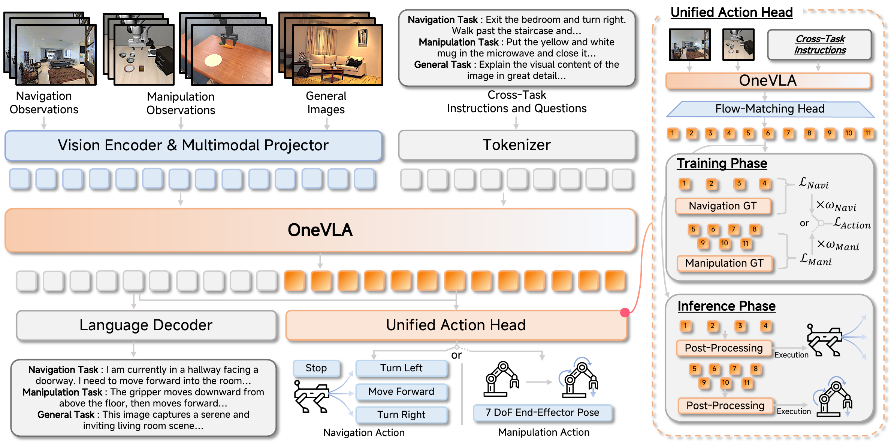
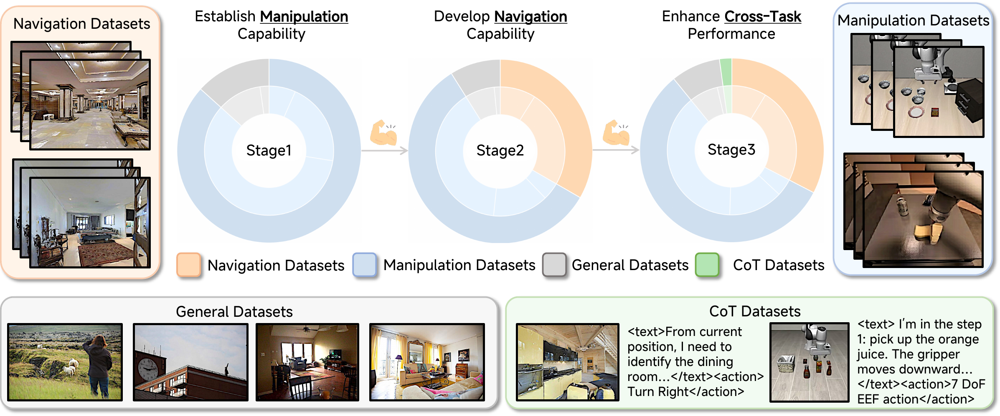
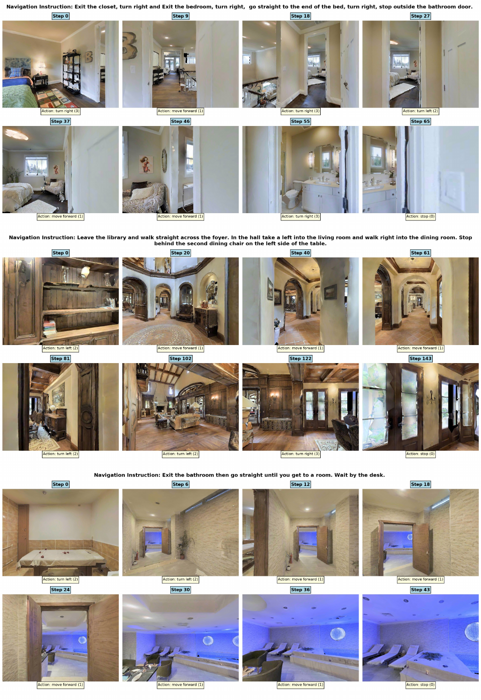
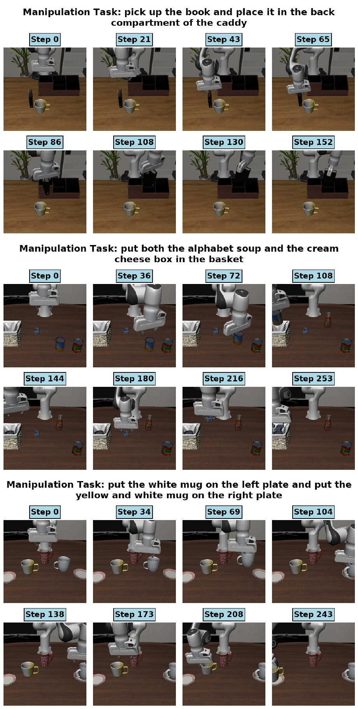
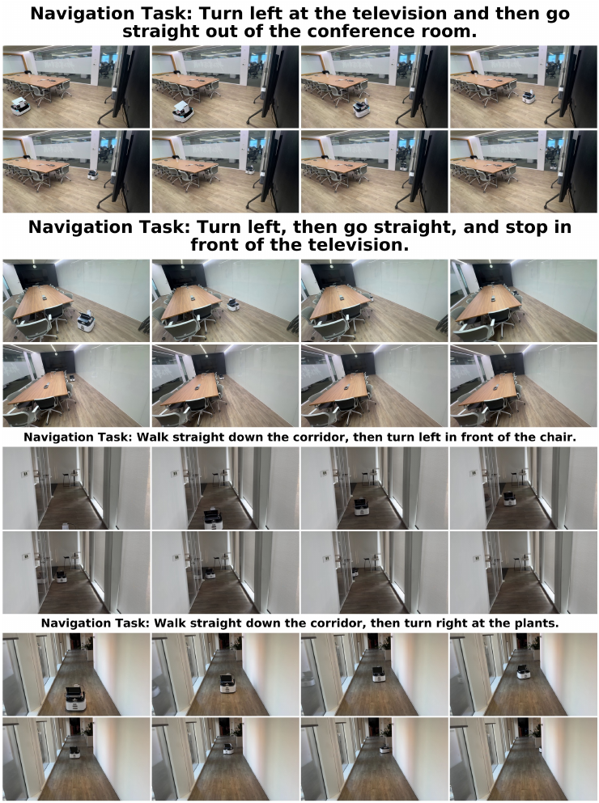
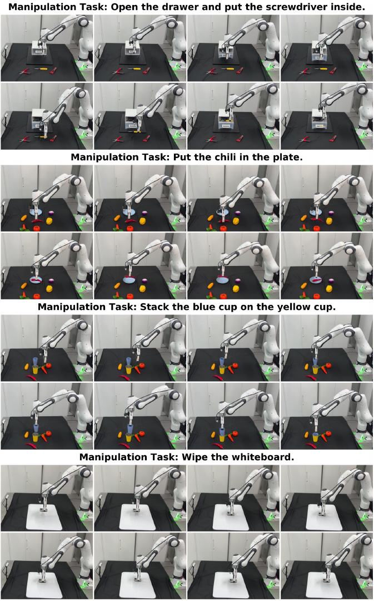

Navigation and manipulation are fundamental capabilities of embodied intelligence, enabling robots to interpret natural language commands and interact physically with their surroundings. However, current Vision-Language-Action models often rely on task-specific architectures, specializing in either navigation or manipulation and limiting their use as general-purpose robotic agents.
OneVLA introduces a unified architecture that integrates these distinct tasks into a single framework. It uses a unified action head to generate both navigation and manipulation actions without task-specific variants, and adopts a multi-stage progressive training strategy with curated data construction and Chain-of-Thought fine-tuning. Experiments in simulated and real-world environments show that OneVLA achieves state-of-the-art performance and that navigation and manipulation can mutually reinforce each other during joint training.
OneVLA learns shared vision-language representations and predicts task-specific actions through a single unified action head.

Multi-view RGB observations, language instructions, and optional robot state are processed by one shared backbone.
The model generates language reasoning and future robot actions in a single forward pass.
Four navigation dimensions and seven manipulation dimensions are concatenated into one 11D action representation.
Dimension-specific masks supervise only the relevant action dimensions for each embodied task.
A three-stage curriculum first builds manipulation skill, then introduces navigation for cross-task transfer, and finally refines the model with Chain-of-Thought data.

OneVLA achieves strong performance across navigation and manipulation while using a single 3B unified model.
+21.5 over UniVLA-Navi with task-specific fine-tuned heads.
+31.9 over UniVLA-Navi on unseen continuous navigation.
+29.1 over UniVLA-Mani across representative manipulation tasks.
Outperforms 7B single-task and cross-task baselines without task-specific variants.
Representative examples across simulator and real-world navigation and manipulation.




@article{zhang2026onevla,
title={OneVLA: A Unified Framework for Embodied Tasks},
author={Zhang, Lingfeng and Hao, Xiaoshuai and Tang, Yingbo and Zhou, Lei and Zhang, Shuyi and Liu, Jinkun and Li, Hongsheng and Zhang, Chenhao and Zhang, Qiang and Ye, Hangjun and Liang, Xiaojun and Chen, Long and Ding, Wenbo},
journal={Preprint},
year={2026}
}